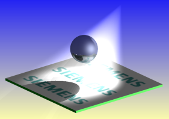

Estimated time to complete: 11–16 minutes
This test model has some sophisticated visualization qualities filed with it. In this activity, you will use this model to contrast and compare some of the shading methods available and explore some High Quality Image options.

Launch the Compare rendering methods activity.